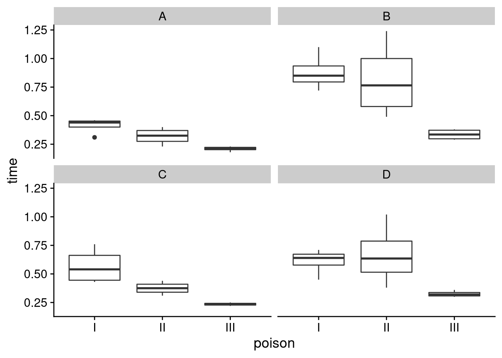

9 Lecture 8: Multiple regression
library(tidyverse)
library(cowplot) # Theme
library(faraway) # Data
library(table1) # Table1
library(knitr) # kable
library(kableExtra) # Pretty kables9.1 ANCOVA
The analysis of covariance (ANCOVA) is a linear model with one continuous variables and one categorical (factor) variable. We will use the cathedral data from the faraway package to demonstrate the ANCOVA model. Let’s summarize it quickly.
# Load data
data('cathedral')
glimpse(cathedral)
#> Rows: 25
#> Columns: 3
#> $ style <fct> r, r, r, r, r, r, r, r, r, g, g, g, g, g, g,…
#> $ x <dbl> 75, 80, 68, 64, 83, 80, 70, 76, 74, 100, 75,…
#> $ y <dbl> 502, 522, 425, 344, 407, 451, 551, 530, 547,…Our data consists of 25 observations and 3 variables. The variables we have are style, x, and y.
style: The architectural style of the cathedral. It has two levels:rfor Romanesque andgfor Gothic.x: The nave height of the cathedral. Measured in feet.y: The length of the cathedral. Measured in feet.
Let’s plot the data to see what it looks like:
cathedral %>%
ggplot(aes(x = x, y = y, color = style)) +
geom_point() +
scale_color_brewer(type = 'seq', palette = 'Set1') +
theme_cowplot() +
theme(legend.position = 'bottom')There are many models we can fit to this data but we are interested in three:
A model which only uses
x: one slope, one intercept.A model which uses
xandstyle: one slope, two intercepts.A model which uses
xandstyle: two slopes, two intercepts.
9.1.1 The first model: one intercept, one slope
The first model which only uses x assumes that the data is explained by a single line. Let’s fit our model and look at the results.
ancovM1 <- lm(y ~ x, data = cathedral)
summary(ancovM1)
#>
#> Call:
#> lm(formula = y ~ x, data = cathedral)
#>
#> Residuals:
#> Min 1Q Median 3Q Max
#> -201.601 -31.241 4.378 52.097 147.745
#>
#> Coefficients:
#> Estimate Std. Error t value Pr(>|t|)
#> (Intercept) 76.420 89.258 0.856 0.400739
#> x 4.669 1.172 3.985 0.000584 ***
#> ---
#> Signif. codes:
#> 0 '***' 0.001 '**' 0.01 '*' 0.05 '.' 0.1 ' ' 1
#>
#> Residual standard error: 85.83 on 23 degrees of freedom
#> Multiple R-squared: 0.4084, Adjusted R-squared: 0.3827
#> F-statistic: 15.88 on 1 and 23 DF, p-value: 0.0005838Let’s add the regression line to the plot of our data:
cathedral %>%
ggplot(aes(x = x, y = y)) +
geom_point(aes(color = style)) +
stat_smooth(method = 'lm', se = F) +
scale_color_brewer(type = 'seq', palette = 'Set1') +
theme_cowplot() +
theme(legend.position = 'bottom')
#> `geom_smooth()` using formula 'y ~ x'9.1.2 The second model: same slope, different intercepts
Looking at the plot above we might ask ourselves that maybe two lines describe the data better. Let’s test this by adding style to our model.
ancovM2 <- lm(y ~ x + style, data = cathedral)
summary(ancovM2)
#>
#> Call:
#> lm(formula = y ~ x + style, data = cathedral)
#>
#> Residuals:
#> Min 1Q Median 3Q Max
#> -172.67 -30.44 20.38 55.02 96.50
#>
#> Coefficients:
#> Estimate Std. Error t value Pr(>|t|)
#> (Intercept) 44.298 81.648 0.543 0.5929
#> x 4.712 1.058 4.452 0.0002 ***
#> styler 80.393 32.306 2.488 0.0209 *
#> ---
#> Signif. codes:
#> 0 '***' 0.001 '**' 0.01 '*' 0.05 '.' 0.1 ' ' 1
#>
#> Residual standard error: 77.53 on 22 degrees of freedom
#> Multiple R-squared: 0.5384, Adjusted R-squared: 0.4964
#> F-statistic: 12.83 on 2 and 22 DF, p-value: 0.0002028Look at the output. The coefficient for x is still the slope but now we have two intercept. We have the actual reported intercept term (Intercept) for the baseline level g and then we have part of the intercept term for the Romanesque style. To get the actual intercept term for level r we need to add the two terms together.
sum(coefficients(ancovM2)[c(1, 3)])
#> [1] 124.6905A very useful function is the fortify() function from the ggplot2 package which is included with the tidyverse package.
fortM2 <- fortify(ancovM2)
fortM2 %>%
as_tibble()
#> # A tibble: 25 × 9
#> y x style .hat .sigma .cooksd .fitted .resid
#> <dbl> <dbl> <fct> <dbl> <dbl> <dbl> <dbl> <dbl>
#> 1 502 75 r 0.111 79.2 0.00447 478. 23.9
#> 2 522 80 r 0.117 79.2 0.00345 502. 20.4
#> 3 425 68 r 0.119 79.2 0.00342 445. -20.1
#> 4 344 64 r 0.131 77.0 0.0653 426. -82.2
#> 5 407 83 r 0.125 75.2 0.107 516. -109.
#> 6 451 80 r 0.117 78.5 0.0213 502. -50.6
#> 7 551 70 r 0.115 76.1 0.0757 455. 96.5
#> 8 530 76 r 0.112 78.6 0.0175 483. 47.2
#> 9 547 74 r 0.111 77.5 0.0423 473. 73.6
#> 10 519 100 g 0.180 79.3 0.000185 515. 3.54
#> # … with 15 more rows, and 1 more variable: .stdresid <dbl>The fortify() function gives us a data frame with the independent and dependent variables along with the predicted values and some diagnostics quantities. For this lecture we will only concern ourselves with the independent and dependent variables as well as the .fitted column.
We can now use our fortified data frame to plot the results of our model:
fortM2 %>%
ggplot(aes(x = x, color = style)) +
geom_point(aes(y = y)) +
geom_line(aes(y = .fitted)) +
scale_color_brewer(type = 'seq', palette = 'Set1') +
theme_cowplot() +
theme(legend.position = 'bottom') We now see that we have two lines. They are parallel which should make sense as they have the same slope. The only difference between the two is the intercept.
9.1.3 The third model: two slopes, two intercepts
Allowing two intercept seems to have improved our model. What if we allow a second slope as well?
ancovM3 <- lm(y ~ x * style, data = cathedral)
summary(ancovM3)
#>
#> Call:
#> lm(formula = y ~ x * style, data = cathedral)
#>
#> Residuals:
#> Min 1Q Median 3Q Max
#> -172.68 -30.22 23.75 55.78 89.50
#>
#> Coefficients:
#> Estimate Std. Error t value Pr(>|t|)
#> (Intercept) 37.111 85.675 0.433 0.669317
#> x 4.808 1.112 4.322 0.000301 ***
#> styler 204.722 347.207 0.590 0.561733
#> x:styler -1.669 4.641 -0.360 0.722657
#> ---
#> Signif. codes:
#> 0 '***' 0.001 '**' 0.01 '*' 0.05 '.' 0.1 ' ' 1
#>
#> Residual standard error: 79.11 on 21 degrees of freedom
#> Multiple R-squared: 0.5412, Adjusted R-squared: 0.4757
#> F-statistic: 8.257 on 3 and 21 DF, p-value: 0.0008072We now have four coefficients. We have the intercept (Intercept) and slope x of the regression line for the Gothic-style cathedral and we have the intercept styler and slope x:styler for the regression line of the Romanesque-style cathedral. To get the true intercept and slope for the Romanesque style we need to add the intercept terms together and the slope terms:
sum(coefficients(ancovM3)[c(1, 3)])
#> [1] 241.8327
sum(coefficients(ancovM3)[c(2, 4)])
#> [1] 3.138068We plot the regression lines over our data using the fortify() version of our data:
fortify(ancovM3) %>%
ggplot(aes(x = x, y = y, color = style)) +
geom_point() +
geom_line(aes(y = .fitted)) +
scale_color_brewer(type = 'seq', palette = 'Set1') +
theme_cowplot() +
theme(legend.position = 'bottom')9.1.4 Three models, but which model?
We have fitted three models to our data. We now need some way to select the best model of the three, based on some measure. Let’s get the coefficient of determination \(R^2\) and its adjusted version for each model and compare the values:
tibble(model = c('Model 1', 'Model 2', 'Model 3'),
r2 = c(summary(ancovM1)$r.squared,
summary(ancovM2)$r.squared,
summary(ancovM3)$r.squared),
r2adj = c(summary(ancovM1)$adj.r.squared,
summary(ancovM2)$adj.r.squared,
summary(ancovM3)$adj.r.squared)) %>%
kbl() %>%
kable_styling(full_width = F)| model | r2 | r2adj |
|---|---|---|
| Model 1 | 0.4084474 | 0.3827277 |
| Model 2 | 0.5383801 | 0.4964147 |
| Model 3 | 0.5412070 | 0.4756651 |
As you can see \(R^2\) increased as we added variables to our model. This is an inherit property of \(R^2\) and a reason why we can’t rely on it blindly when judging the quality of our model. The adjusted \(R^2\) fluctuates however. The reason for this fluctuation is that the adjusted \(R^2\) penalizes the addition of variables to a model. Based on the table above, model two looks like the candidate model. We can actually test this with the anova() function.
Notice how both the first and second model are “embedded” in some sense in the third model. I say this because the third model contains all the variables that are used in the first and second model. To test whether a “reduced” model performs better than the “full” model we use the anova() function:
anova(ancovM2, ancovM3)
#> Analysis of Variance Table
#>
#> Model 1: y ~ x + style
#> Model 2: y ~ x * style
#> Res.Df RSS Df Sum of Sq F Pr(>F)
#> 1 22 132223
#> 2 21 131413 1 809.7 0.1294 0.7227The null hypothesis of the test above is that adding a variable (or variables) did not improve our fit. If model three had outperformed model two we would have been able to reject the null hypothesis but we were unsuccessful. The results of the ANOVA test should not have come as a surprise when you think about the adjusted \(R^2\) values and the output of the summaries of the models.
Bottom line: seems like a model with two intercepts and one slope fits the data best of the three models we constructed.
9.2 Two-way ANOVA
The two-way ANOVA is a linear model with two categorical (factor variable) and a continuous response. We will use the rats data from the faraway package.
data('rats')
glimpse(rats)
#> Rows: 48
#> Columns: 3
#> $ time <dbl> 0.31, 0.82, 0.43, 0.45, 0.45, 1.10, 0.45, 0…
#> $ poison <fct> I, I, I, I, I, I, I, I, I, I, I, I, I, I, I…
#> $ treat <fct> A, B, C, D, A, B, C, D, A, B, C, D, A, B, C…The data consists of 48 lines and 3 columns. The variables of the data set are time, poison, and treat:
time: The survival time of the rats. Measured in tens of hours.poison: The type of poison the rats were subjected to. The variable has three levels:I,II, andIII.treat: The treatment the rats were subject to. The variable has four levels:A,B,C, andD.
Let’s plot our data:
rats %>%
ggplot(aes(x = poison, y = time)) +
geom_boxplot() +
facet_wrap(~treat) +
theme_cowplot() Looking at the plots above it seems that poison III is the most potent. Similarly, treatment B seems to have the greatest efficacy. But is there an interaction between the two variables? That is, does the effect of one variable depend on the other? If there is no interaction, we simply use an additive model; we add the effects of variable \(x\) to variable \(y\). If there is an interaction, things can get complicated.
To check for interactions graphically we create an interaction plot:
rats %>%
ggplot(aes(x = poison, y = time, group = treat)) +
stat_summary(aes(color = treat), fun.y = mean, geom = 'line') +
scale_color_brewer(type = 'seq', palette = 'Set1') +
theme_cowplot() +
theme(legend.position = 'bottom')
#> Warning: `fun.y` is deprecated. Use `fun` instead.The \(x\)-axis is the poison type, the \(y\)-axis the mean survival time. If the lines start crossing, we expect an interaction effect. The plot above shows that there may be some interactions, but the graphical evidence is unconvincing. Let’s formally test if there is an interaction effect.
anov2w <- lm(time ~ treat * poison, data = rats)
anova(anov2w)
#> Analysis of Variance Table
#>
#> Response: time
#> Df Sum Sq Mean Sq F value Pr(>F)
#> treat 3 0.92121 0.30707 13.8056 3.777e-06 ***
#> poison 2 1.03301 0.51651 23.2217 3.331e-07 ***
#> treat:poison 6 0.25014 0.04169 1.8743 0.1123
#> Residuals 36 0.80073 0.02224
#> ---
#> Signif. codes:
#> 0 '***' 0.001 '**' 0.01 '*' 0.05 '.' 0.1 ' ' 1We see that both treatment and poison seem to be significant but the interaction between the two variables treat:poison is not significant. We therefore conclude that the interactions are not significant.
9.2.1 Same method, different data set
Let’s look at another example. We will use the ToothGrowth data which is included with R.
glimpse(ToothGrowth)
#> Rows: 60
#> Columns: 3
#> $ len <dbl> 4.2, 11.5, 7.3, 5.8, 6.4, 10.0, 11.2, 11.2, 5…
#> $ supp <fct> VC, VC, VC, VC, VC, VC, VC, VC, VC, VC, VC, V…
#> $ dose <dbl> 0.5, 0.5, 0.5, 0.5, 0.5, 0.5, 0.5, 0.5, 0.5, …The data consists of 60 lines and 3 columns. The variables of the data set are len, supp, and dose:
len: The length of the tooth.supp: Supplement type. The variable has two levels:OJ(orange juice) andVC(vitamin C).dose: The dose in milligrams. The levels are0.5,1.0, and2.0.
This data set is much bigger than the rats one so we will summarize it quickly with the summary() function.
summary(ToothGrowth)
#> len supp dose
#> Min. : 4.20 OJ:30 Min. :0.500
#> 1st Qu.:13.07 VC:30 1st Qu.:0.500
#> Median :19.25 Median :1.000
#> Mean :18.81 Mean :1.167
#> 3rd Qu.:25.27 3rd Qu.:2.000
#> Max. :33.90 Max. :2.000Notice that dose is treated as a continuous variable. This is something that we don’t want. The numbers represent a category. We will therefore recast dose as a factor variable.
Let’s plot our data:
ToothGrowth %>%
ggplot(aes(x = dose, y = len, fill = supp)) +
geom_boxplot() +
scale_fill_brewer(type = 'seq', palette = 'Set1') +
theme_cowplot() +
theme(legend.position = 'bottom')Let’s also plot the interactions.
ToothGrowth %>%
ggplot(aes(x = dose, y = len, group = supp)) +
stat_summary(aes(color = supp), fun.y = mean, geom = 'line') +
scale_color_brewer(type = 'seq', palette = 'Set1') +
theme_cowplot() +
theme(legend.position = 'bottom')
#> Warning: `fun.y` is deprecated. Use `fun` instead.We see that under VC the mean length grows nicely as we increase the dose. For the OJ group we see a shift going from dose 1.0 to dose 2.0. The two treatment lines cross at dose 2.0. Let’s formally test if there is an interaction:
anov2wtooth <- lm(len ~ supp * dose, data = ToothGrowth)
anova(anov2wtooth)
#> Analysis of Variance Table
#>
#> Response: len
#> Df Sum Sq Mean Sq F value Pr(>F)
#> supp 1 205.35 205.35 15.572 0.0002312 ***
#> dose 2 2426.43 1213.22 92.000 < 2.2e-16 ***
#> supp:dose 2 108.32 54.16 4.107 0.0218603 *
#> Residuals 54 712.11 13.19
#> ---
#> Signif. codes:
#> 0 '***' 0.001 '**' 0.01 '*' 0.05 '.' 0.1 ' ' 1This time we see that the supplement, dose AND interaction between those two variables are significant.
9.3 Multiple linear regression
There is no reason to stop at three variables. We can continuously add variables to our model and R will happily fit it for us.
pulse <- read_csv2('https://notendur.hi.is/thj73/data/pulseEn.csv')
summary(lm(secondPulse ~ firstPulse*intervention + sex + height + weight, data = pulse))
#>
#> Call:
#> lm(formula = secondPulse ~ firstPulse * intervention + sex +
#> height + weight, data = pulse)
#>
#> Residuals:
#> Min 1Q Median 3Q Max
#> -29.622 -5.599 -0.322 3.788 53.701
#>
#> Coefficients:
#> Estimate Std. Error
#> (Intercept) 33.936496 6.050011
#> firstPulse 0.880819 0.075194
#> interventionstationary -31.353887 7.469346
#> sex -0.752416 1.227185
#> height 0.008287 0.006409
#> weight 0.002131 0.006963
#> firstPulse:interventionstationary 0.074302 0.101535
#> t value Pr(>|t|)
#> (Intercept) 5.609 3.61e-08 ***
#> firstPulse 11.714 < 2e-16 ***
#> interventionstationary -4.198 3.27e-05 ***
#> sex -0.613 0.540
#> height 1.293 0.197
#> weight 0.306 0.760
#> firstPulse:interventionstationary 0.732 0.465
#> ---
#> Signif. codes:
#> 0 '***' 0.001 '**' 0.01 '*' 0.05 '.' 0.1 ' ' 1
#>
#> Residual standard error: 12.18 on 436 degrees of freedom
#> (28 observations deleted due to missingness)
#> Multiple R-squared: 0.6795, Adjusted R-squared: 0.6751
#> F-statistic: 154 on 6 and 436 DF, p-value: < 2.2e-16That’s not to say that more is always better. The general rule of thumb is parsimony or smaller is better. We want our model to generalize to data that it hasn’t seen before (predict). If we tailor our model too closely to the data we use to construct it we run at risk of overfitting.
9.3.1 The problem of overfitting
I am going to create fake data set to demonstrate the danger of overfitting. First I create the “truth”. I want my dependent variable \(y\) to be created from independent variable \(x\). I want them to be related in the following way:
\[ y = 1 + 2 \cdot x = \beta _ 0 + \beta _ 1 x. \]
Of course there needs to be some sort of randomness in the model because otherwise there would be no point in the analysis. I therefore add \(\varepsilon \sim N(0, \sigma ^2) = N(0, 3^2)\) to the data to create fluctuations.
# Create data
set.seed(1)
n <- 10
x <- rnorm(n = n, mean = 1, sd = 2)
y <- 1 + 2 * x + rnorm(n = n, mean = 0, sd = 3)
overData <- data.frame(x, y)Let’s fit a linear model to this data and see what we get:
lmSmall <- lm(y ~ x, data = overData)
summary(lmSmall)
#>
#> Call:
#> lm(formula = y ~ x, data = overData)
#>
#> Residuals:
#> Min 1Q Median 3Q Max
#> -5.1252 -1.8286 0.4301 2.5616 3.0235
#>
#> Coefficients:
#> Estimate Std. Error t value Pr(>|t|)
#> (Intercept) 2.7254 1.3108 2.079 0.0712 .
#> x 1.2258 0.6731 1.821 0.1061
#> ---
#> Signif. codes:
#> 0 '***' 0.001 '**' 0.01 '*' 0.05 '.' 0.1 ' ' 1
#>
#> Residual standard error: 3.152 on 8 degrees of freedom
#> Multiple R-squared: 0.2931, Adjusted R-squared: 0.2047
#> F-statistic: 3.316 on 1 and 8 DF, p-value: 0.1061The results are kinda poor but that’s OK; this is just an example. Let’s add more variables to the data.
overData <-
overData %>%
mutate(x2 = x^2, x3 = x^3,
x4 = x^4, x5 = x^5,
x6 = x^6, x7 = x^7,
x8 = x^8)Notice now what happens when I fit a model which includes all of the variables.
lmFull <- lm(y ~ ., data = overData)
summary(lmFull)
#>
#> Call:
#> lm(formula = y ~ ., data = overData)
#>
#> Residuals:
#> 1 2 3 4 5
#> -7.619e-02 -5.659e-01 -2.188e-01 7.279e-05 1.308e+00
#> 6 7 8 9 10
#> 2.595e-01 -1.734e+00 -1.127e-01 1.058e+00 8.274e-02
#>
#> Coefficients:
#> Estimate Std. Error t value Pr(>|t|)
#> (Intercept) 4.6104 5.3893 0.855 0.549
#> x -3.3422 7.7297 -0.432 0.740
#> x2 -1.6993 61.1088 -0.028 0.982
#> x3 10.8544 51.8809 0.209 0.869
#> x4 -12.8163 78.8381 -0.163 0.897
#> x5 11.0604 122.0096 0.091 0.942
#> x6 -6.2146 68.9239 -0.090 0.943
#> x7 1.7458 17.3631 0.101 0.936
#> x8 -0.1794 1.6103 -0.111 0.929
#>
#> Residual standard error: 2.509 on 1 degrees of freedom
#> Multiple R-squared: 0.944, Adjusted R-squared: 0.4961
#> F-statistic: 2.108 on 8 and 1 DF, p-value: 0.4896Notice how large \(R^2\). It’s almost 1 which is as good as it can get! Let’s plot the two regression “lines” we get from the fit to see what is actually going on. We begin by adding the predicted model values to our data and then reduce the data set and pivot it to the long format.
overDataLong <-
overData %>%
mutate(smallPred = predict(lmSmall),
fullPred = predict(lmFull)) %>%
select(x, y, smallPred, fullPred) %>%
gather(regression, value, -x, -y)
overDataLong
#> x y regression value
#> 1 -0.2529076 5.0295283 smallPred 2.4154335
#> 2 1.3672866 4.9041030 smallPred 4.4014570
#> 3 -0.6712572 -2.2062362 smallPred 1.9026233
#> 4 4.1905616 2.7370235 smallPred 7.8622089
#> 5 1.6590155 7.6928238 smallPred 4.7590564
#> 6 -0.6409368 -0.4166744 smallPred 1.9397899
#> 7 1.9748581 4.9011454 smallPred 5.1462141
#> 8 2.4766494 8.7848075 smallPred 5.7613066
#> 9 2.1515627 7.7667890 smallPred 5.3628174
#> 10 0.3892232 3.5601504 smallPred 3.2025533
#> 11 -0.2529076 5.0295283 fullPred 5.1057217
#> 12 1.3672866 4.9041030 fullPred 5.4700126
#> 13 -0.6712572 -2.2062362 fullPred -1.9874255
#> 14 4.1905616 2.7370235 fullPred 2.7369508
#> 15 1.6590155 7.6928238 fullPred 6.3851049
#> 16 -0.6409368 -0.4166744 fullPred -0.6761837
#> 17 1.9748581 4.9011454 fullPred 6.6351488
#> 18 2.4766494 8.7848075 fullPred 8.8975269
#> 19 2.1515627 7.7667890 fullPred 6.7091933
#> 20 0.3892232 3.5601504 fullPred 3.4774106Now let’s plot the lines:
overDataLong %>%
ggplot(aes(x = x)) +
geom_point(aes(y = y)) +
geom_line(aes(y = value, color = regression)) +
scale_color_brewer(type = 'seq', palette = 'Set1') +
theme_cowplot() +
theme(legend.position = 'bottom')The full model goes out of its way to be as close to each data point as it can. This may seem nice on paper but the full model is completely useless to make prediction; even interpolation is useless. Let’s see what happens. The range of x is roughly from 0 to 4. Let’s see what happens if we make the model predict for x = 3.
newPredict <- data.frame(x = 3, x2 = 3^2, x3 = 3^3,
x4 = 3^4, x5 = 3^5, x6 = 3^6,
x7 = 3^7, x8 = 3^8)
predict(lmFull, newPredict)
#> 1
#> 32.43703The model predicts 32.4370343 which is a terrible estimate. The model is useless. It doesn’t generalize.
To finish this section off I’m going to fit ever-increasing models on this data to better show you how \(R^2\) and adjusted \(R^2\) behave. I include the code but don’t worry if you don’t understand it.
X <- model.matrix(lmFull)[, -1]
lmNull <- lm(y ~ 1, data = overData)
r2Data <- list()
for(i in 1:ncol(X)) {
lmTmp <- update(lmNull, . ~ . + X[, 1:i])
tmp <- data.frame(pred = (i + 1),
r2 = summary(lmTmp)$r.squared,
r2adj = summary(lmTmp)$adj.r.squared)
r2Data[[i]] <- tmp
}
do.call(rbind, r2Data) %>%
gather(type, val, -pred) %>%
mutate(pred = factor(pred)) %>%
ggplot(aes(x = pred, y = val, color = type, group = type, lty = type)) +
geom_point() +
geom_line() +
scale_color_brewer(type = 'seq', palette = 'Set1') +
theme_cowplot() +
labs(x = 'Number of predictors', y = 'Value') +
theme(legend.position = 'bottom')As you can see, \(R^2\) increases as we add more variables but \(R^2\) adjusted fluctuates. This is why \(R^2\) adjusted is typically used when model performance is being evaluated.